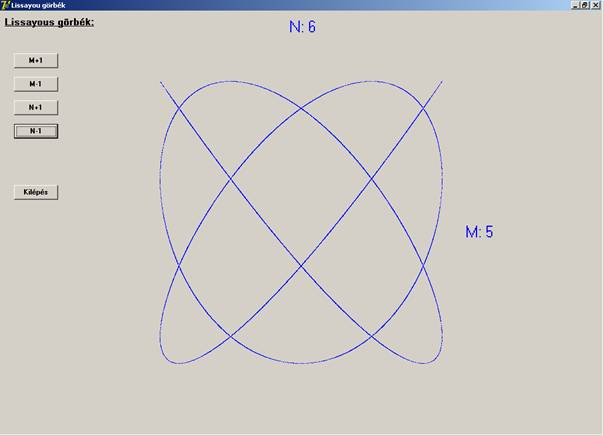

Ha két egymásra merőleges tengelyű, transzverzális sinusos rezgés interferál, az eredő a két rezgőmozgás relatív fázisának és frekvenciájának megfelelően változik. Ha például a két rezgés frekvenciája azonos és fáziskülönbségük nulla vagy 180 fok, akkor az eredő rengés lineáris, ha a fáziskülönbség ettől eltérő, akkor ellipszis, egyenlő amplitúdó és 90 fok eltérés esetén kör mentén játszódik le a rezgés. Ha a két frekvencia nem azonos, akkor a rezgés a két frekvencia arányától függő, bonyolultabb ábrákat, Lissajous görbéket kapunk. Ha a fáziskülönbségeket kis mértékben folyamatosan változtatjuk, akkor a keletkezett rezgés is folyamatosan változik. Ez a program az utóbb leírt, folyamatosan átalakuló Lissajous görbéket szemlélteti. A listába belejavítva, a paraméterek változtatható (amplitúdó, fázisugrás). Futás közben az alap frekvenciaarányok négy nyomógomb segítségével, egyesével változtathatók. A folyamatos megjelenést időzítőre bíztam, melynek a kapcsolási intervalluma 1 ezred. A program 30000 ponttal rajzolja a görbéket, mely szám lassúbb gépeknél csökkenthető. A következő két futási képen a két frekvenciának az aránya 6:5. Az első képen a fáziskülönbség 90 foknak egész számú többszöröse, a második egy ettől kicsit eltérő (röviddel az előző után létrejövő) fáziskülönbségű állapotot mutat, a harmadiknál az arány 10:7.
8. Merőleges rezgések összetétele Legyen két rezgés egymásra merőleges, azonos frekvenciájú, harmonikus rezgés. Egyenlet ik, feltételezve, hogy az egyik x irányú, a másik y irányú: y=A1 × sin(ωt) és x=A2 × sin(ωt*φ0) Ebben az esetben a pont pályája függ az amplitúdók arányától és a rezgések közötti φ0 fáziskülönbségtől. Speciális esetek:
a) φ0=0, azaz a rezgések azonos fázisúak. A két rezgésegyenletet egymással elosztva kapjuk:
y/x=A1/A2
ami nem más, mint egy origón átmenő egyenes egyenlete. A test ezen egyenes által meghatározott irányban végez rezgéseket, ω szögsebességgel és A =√(A12+A22) amplitúdóval. Ha a φ0= π =180o , akkor az eset hasonló, csak az egyenes iránytényezője ellentétes előjelű.
b) φ0= π /2 =90o és A1=A2. Ebben az esetben a két kitérésegyenlet:
y=A × sin(ωt) x=A × sin(ωt + π /2)=Acos(ωt)
Az egyenleteket négyzetre emelve és összeadva kapjuk:
x2 + y2= A 2
A 32-es egy origóval megegyező középpontú kör egyenlete. A test ezen a körpályán végez egyenletes körmozgást szögsebességgel. Ha a φ0= 3 π/2 = 270o , akkor az előbbihez hasonlóan körpályán mozog a test, azzal a különbséggel, hogy a mozgás ellentétes irányítású (óramutatóval megegyező).
c) φ0= π /2 =90o de A1≠A2. A kitérésegyenletek ebben az esetben:
y=A1 × sin(ωt) és x=A2 × cos(ωt)
Ebben az esetben kifejezzük mindkét egyenletből a szögfüggvényeket, négyzetre emeljük őket és a sin2 x + cos2 x = 1 trigonometriai azonosságot felhasználva kapjuk:
(x2/A22)+(y2/A22)=1
A 34-es szerint a test pályája ellipszis melynek tengelyei egybeesnek a koordinátatengelyekkel. A tengelyek hossza 21, illetve 2A2.
d) Eltérő frekvenciájú, egymásra merőleges harmonikus rezgések összetétele esetén, általában bonyolult, nem periodikus rezgés jön létre. Ezek az ún. Lissajous-görbék.